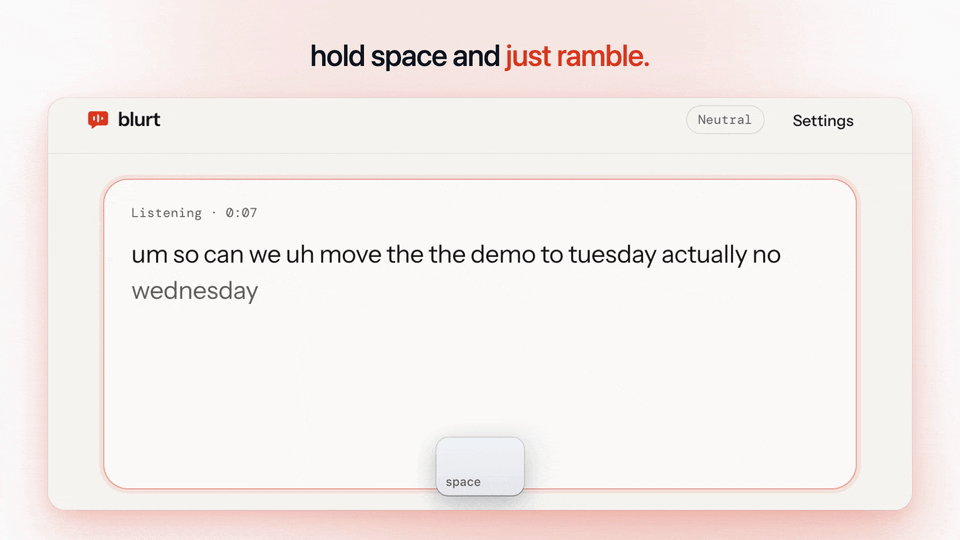

built by @forkthis_ai
built by @forkthis_ai
talk instead
of typing.
Hold a key or a button, ramble, let go. You get clean, punctuated text on your clipboard: the ums are gone, your "actually, no, Wednesday" corrections are applied, and you see exactly what changed. In any browser tab, nothing to install, no weekly word cap.
See it

What works
Hold Space on a computer, or the big mic button on a phone. Your words stream in live with a level meter. Esc cancels.
Fillers struck out, self-corrections applied, stutters removed, punctuation and capitals added, spoken lists numbered, "comma" and "new line" turned into marks.
A basic cleanup runs instantly in the page. AI cleanup through publik or your own Anthropic key swaps in when it answers.
Clean text lands on your clipboard automatically, with a Copy button as backup and the share sheet on phones.
Casual, neutral, formal or a prompt for an AI. Names and jargon, and cues like "my email" that expand to text.
Grouped by day, searchable, re-clean any take, auto-delete after 24 hours or 7 days, export and import as JSON.
Not yet
- It can't type into other apps by itself: it copies, you paste. A browser extension could; not built.
- Firefox has no speech recognition: you can paste text and clean it there, but not dictate.
- Your browser's speech service hears the audio (Google's in Chrome, Apple's in Safari). No on-device speech model yet.
- No offline mode, no voice commands on selected text, no saved audio.
Run it yourself
git clone https://github.com/VedSoni-dev/blurt cd blurt && npm install && npm run dev
For AI cleanup, open Settings and paste an Anthropic API key; it stays in your browser. The publik listing is on the way, so use the live site for now.